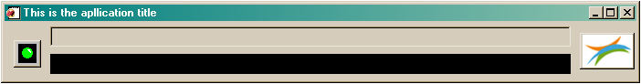

> Common Code
> Common Code
IOScc_Init
Syntax | Return Value | Arguments | Keywords | Examples | Version History
This
function will check if a status object, representing the status window,
is existing. If no valid status window is present a new default status
window is created.
Syntax
Result = IOScc_INIT([oStatus] [,BITMAP=string] [, LOG_DIRECTORY=string] [, LOG_FILE_PREFIX=string] [, OUSER=object] [, TITLE=string])
Return Value
The actual or new created status object.
Arguments
oStatus
The
actual status object. If the argument is not present or the passed
object doesn't exist a new default status window will be created.
Keywords
BITMAP
A
string holding the path to the user bitmap image file holding the logo
to be placed in the logo button on the status window. This keyword
allows the user, when designing his
application, to replace the default logo on the status window with the
designers specific logo and to specify his own designer info bitmap.
The file holding the info bitmap should be named according to the file
holding the logo bitmap with the suffix ‘_info’ added. If
not specified the default VITO logo is used. When this VITO logo button
is pressed the designer info will appear in a separate window.
This designer window can be closed by clicking in this window.
LOG_DIRECTORY
A text string holding the directory location where the log-file should be written.LOG_FILE_PREFIX
A text string holding the prefix name for the log-file.
OUSER
The user object which uses the status object. This is used for proper clean-up at status object termination time.
TITLE
This keyword holds a text string to be put as title on the status window. If not present the default title 'Status' is used.
Examples
- Called from a main application which hasn't a valid status object. The status window as shown will appear.
oStatus = IOScc_Init(TITLE = 'This is the apllication title', Log_DIRECTORY = 'D:/log/', Log_FILE_PREFIX = 'ThisLog')

- Called from
another main object. The calling object id. is passed for proper
clean-up at status object termination time. If the oStatus argument
contains a NULL object a new status object is created.
self.oStatus = IOScc_Init(oStatus, OUSER = self)
Version History
| Author | Date | Description |
| LBer | February 2012 | Created |